The Dynamic data modeling feature allows you to generate and export an XSD file containing a data model by importing its structure from a supported file type (XML, Excel and DDL). This section describes the operations used to generate this file. All user operations are available from the Dynamic data modeling dataset under the Administration tab.
You can refer to the second part of this user guide for a full description of all available options.
Before importing a file that defines a data model's structure, you must create a record in the Data model table that allows you to provide a name and description for a data model configuration. From this record, you can specify a file to import using the Generate from file service, as shown below.
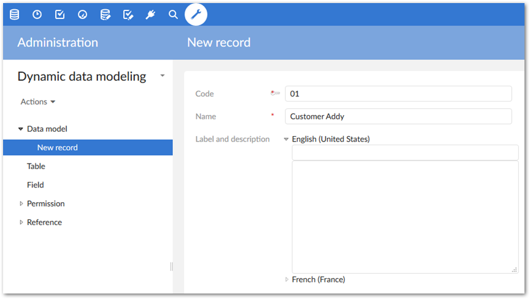
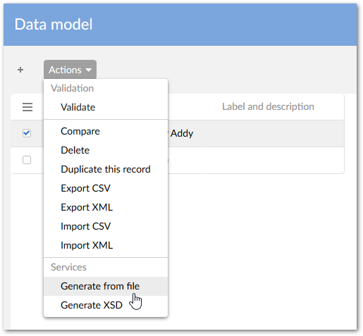
The data format of the imported file is automatically identified by the service. The following formats are supported and discussed in further detail in the following sections: Excel, XML and DDL (SQL).
If you execute the Generate from file service on an existing Data model record, all your previous descriptions are erased.
The first four cells in the first row of the spreadsheet allow the service to automatically detect the worksheet tab's layout. Data contained in an Excel file can be arranged in one of the following two ways:
Either a declaration of the data model structure.
Or a snapshot of actual data values—from which the data model structure is interpreted.
All generated table and field names are normalized by replacing special characters using the underscore ('_') character.
An Excel input file is considered as a data model structure layout when the first four cells of the first row contain exactly properties: Data type, Field name, Is primary key, and Group path. You can change the order of these properties in the input file. Once the tab's layout is determined, Data modeler execute generating data model based on this structure. Each worksheet tab in the file corresponds to a table. Thus, the tab's name provides the table name and each row defines a data model field with properties as declared in four columns. The list of possible Datatype values is defined in the Data type mapping table. If you leave Data type blank, it defaults to String. The default value of Group path is /root.
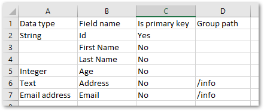
The figure below shows the result of the generation based on the previous spreadsheet example:
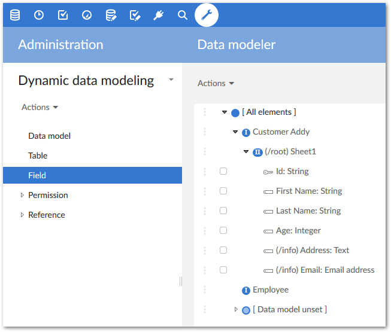
When a spreadsheet contains a set of actual data values—not just a data model outline—the add-on can ascertain data model structure. Each worksheet tab of the spreadsheet corresponds to one table to generate. The name of the worksheet tab becomes the table name in the data model. The first row in the spreadsheet gives the names of every field (one field per column). Systematically, the first cell value is considered the primary key. You cannot have duplicate names in the list of the fields.
All generated fields default to the String data type due to the inability to detect types during generation. Once imported, you can change the data types manually before generating the XSD file by editing the values in the field's Type property.
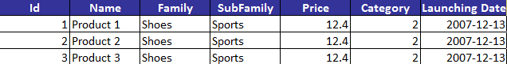
The figure below shows the result of the generation based on the previous spreadsheet example:
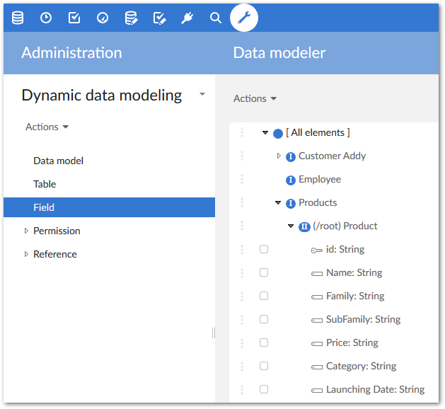
You can import an XML file to generate the data model. The Generate from file service allows you to decide which elements of the XML file correspond to the tables, groups and fields you want to obtain.
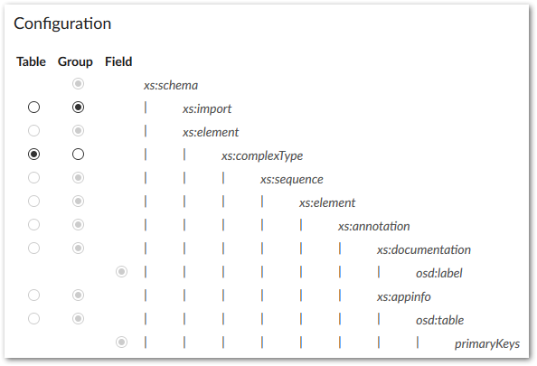
All generated fields default to the String data type due to the inability to detect types during generation. Once imported, you can change the data types manually before generating the XSD file by editing the values in the Field table's Type field.
The figure below shows the result of the generation based on the previous XML example:
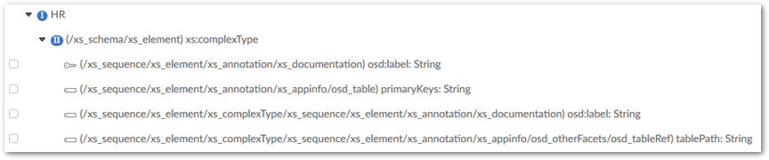
All fields at the same level as the selected table element are ignored in the generated data model. Since the Data modeler does not support to generate a field outside of a table.
You can generate the data model from a DDL description (SQL statements). The following example uses a DDL file that declares a table named EBX_DDS.
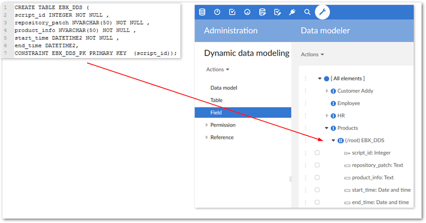
Please refer to appendixes A and B to get the list of supported SQL statements and Databases.
After importing a data model's structure, you can execute the Generate XSD service to obtain the XSD file compliant with EBX®.
This service is located on the Data model table as highlighted below.
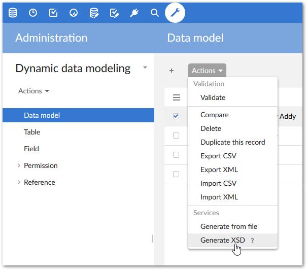
Here is an example of an XSD file generated from a data model. This XSD file is imported into EBX® to obtain the actual data model.
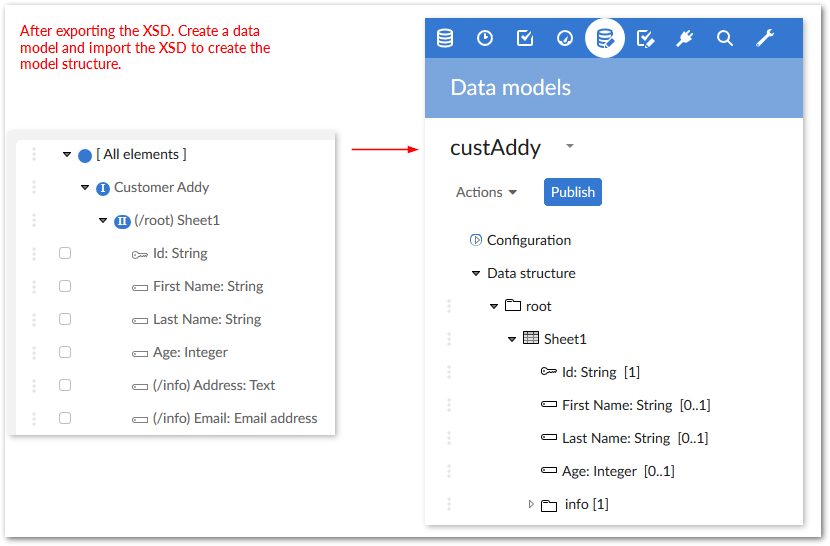
You can author the data model in the DMA (Data modeler Assistant) to adapt it depending on your needs. In case you re-generate the corresponding XSD all these adaptations will be lost.